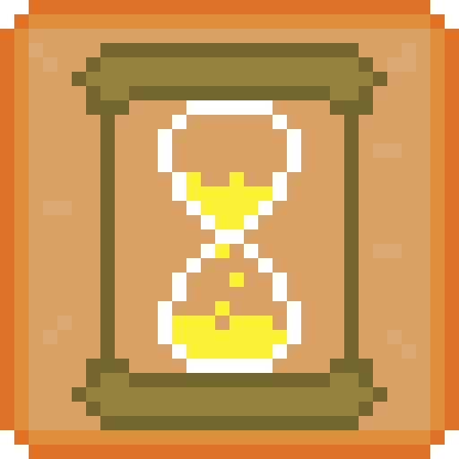
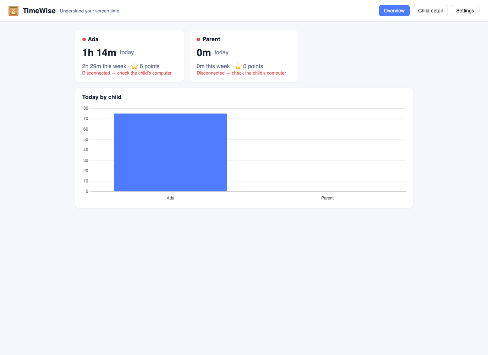
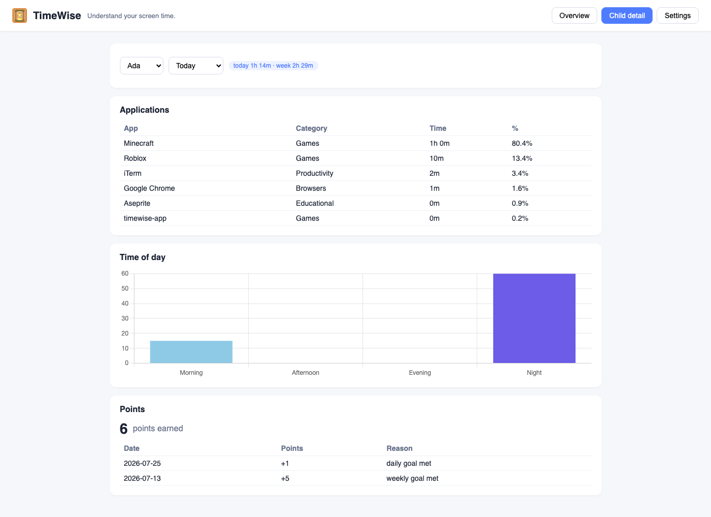
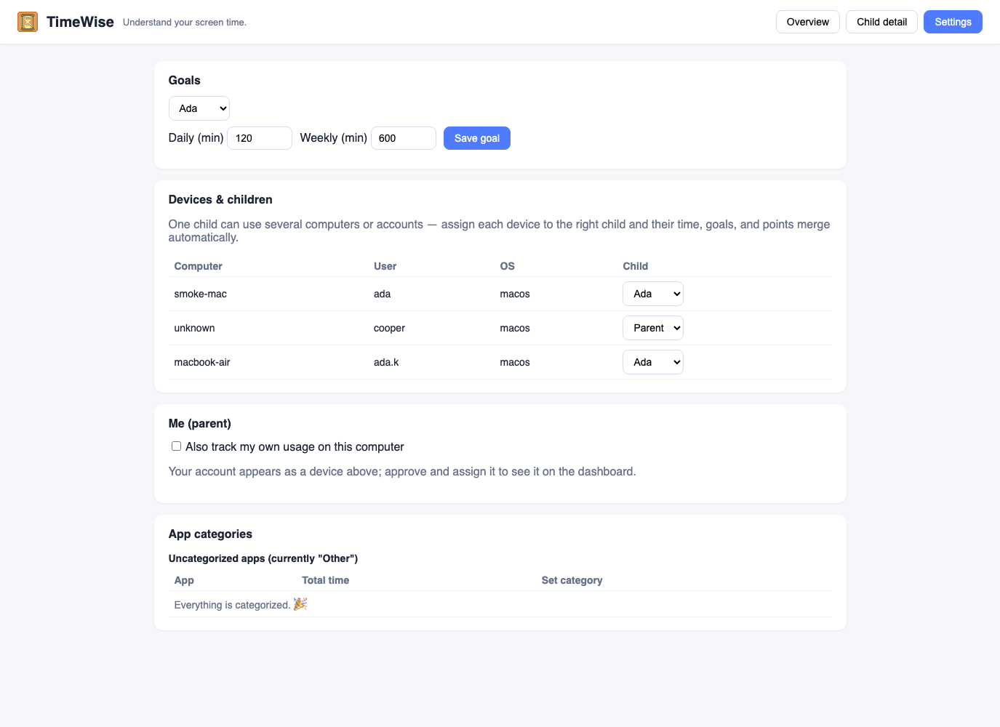

Understand your screen time.
TimeWise helps kids see where their computer time goes — so families can talk about it. No lockouts, no spying, no servers in someone else's cloud.

Install the same app everywhere. On first launch, each account picks a role — it all happens inside your home network.
Everything a family needs to build healthy screen habits — nothing that phones home.
Per-child totals (day/week), per-app breakdown with categories, time-of-day chart, live online status.
Daily and weekly goals per child. Points are awarded only for completed days and weeks with real usage.
Positive, non-blocking notifications at 90/100/110% of goal, plus stretch-break prompts after 40 minutes.
Kids see their own day, goal progress, and points — self-awareness starts with visibility.
One child, several computers or usernames? Merge them — time, goals, and points combine automatically.
All data stays on your LAN in a local SQLite database. No accounts, no analytics, no internet required.
Rust + Tauri 2. Near-zero idle CPU, system-tray app, starts at login, idle pause after 5 minutes.
Games, Educational, Entertainment, Social Media, Productivity, Browsers — auto-categorized, parent-overridable.
Optional — because awareness is for everyone in the family.
Real screenshots from a household setup.


Ten minutes, start to finish.
TimeWise.app from GitHub Releases, or cargo build from source (Rust + Tauri 2).